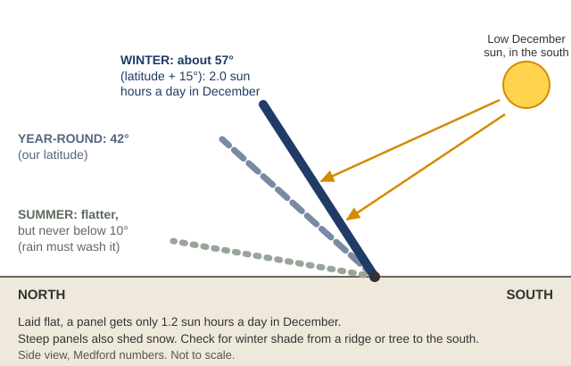
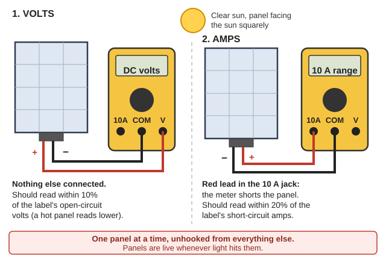
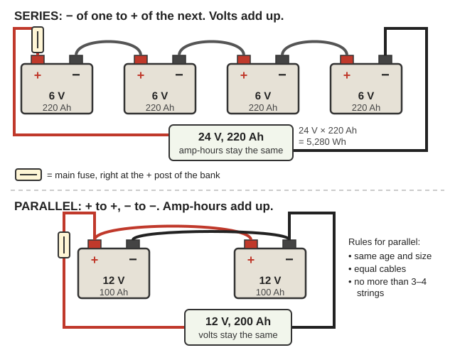
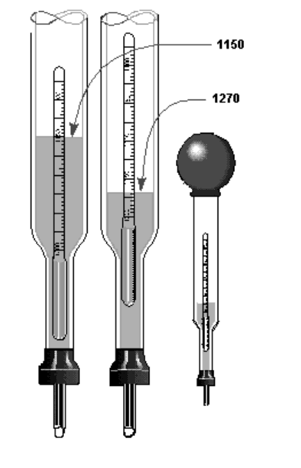
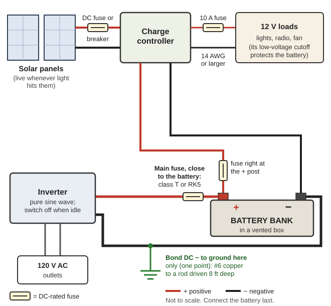
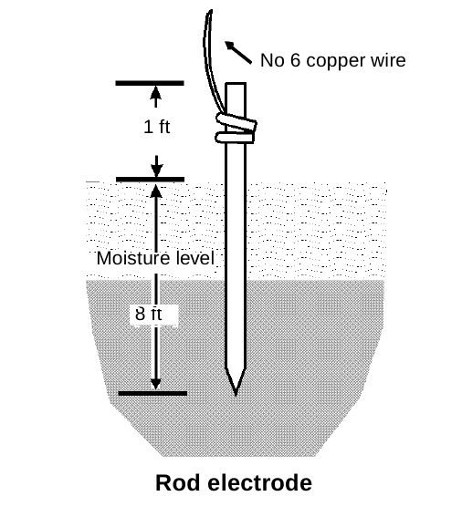
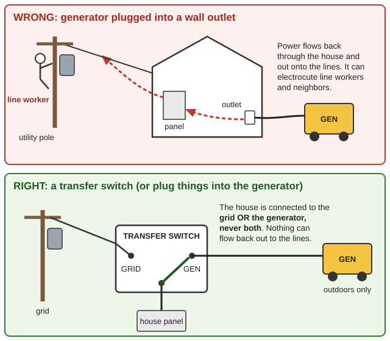
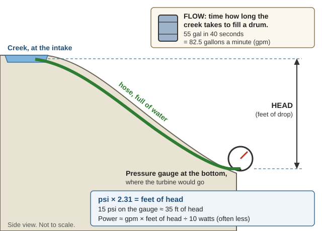

Guides › Heat, light & power · Emergency · Index A–Z
Making and storing electricity with no grid: what you really need, sizing solar for our dark winters, salvaging panels, controllers and inverters, keeping lead-acid and lithium batteries alive and safe, wiring, charging from a generator or car, and creek hydro, which is strongest when solar is weakest. The books are in Off-Grid-Power\ (Solar-PV, Batteries, Electrical-Basics, Micro-Hydro), with homemade generators in Engines-Motors\Motors-as-Generators, solar well pumps in Water-Wells-Pumps\Pumps-No-Grid, and Practical Action's battery and lighting briefs in Homestead-Skills\Household-Make-Do. The short version is in Illinois Valley — Start Here.
⚠️ Rules that prevent the worst outcomes
- Batteries give off hydrogen, which explodes at just 4% in air (DOE-HDBK-1084, p. 22). Vent the top of the room, and never mount a controller, switch or relay in or above a battery box (IEA, p. 53).
- A shorted battery can explode. One golf-cart battery can push about 8,000 amps (Sandia, p. 15). Fuse at the + terminal, connect the battery last, and if a tool shorts it, don't grab it: get away (IEA, p. 22).
- Never plug a generator into a wall outlet. Backfeeding can kill line workers and neighbors. Generators run outdoors only (CPSC, p. 1).
- Panels are live whenever light hits them. Cover them with an opaque tarp before touching wiring (fire FAQ, p. 3).
- Lithium: never charge below 32 °F, never "equalize" it, and never cover or pick up a burning pack; soak it with water from a distance (FAA SAFO 09013).
- Battery acid blinds. Goggles and rubber gloves; flush skin or eyes with water at least 15 minutes (NEETS 1, p. 96).
For each thing you'll run, multiply watts × hours a day = watt-hours (Wh) a day, and add them up (Sandia, p. 16). Take watts from the nameplate or a plug-in watt meter. An example (use your own numbers):
| Item | Watts | Hours a day | Wh a day |
|---|---|---|---|
| 4 LED bulbs | 40 | 5 | 200 |
| Laptop | 50 | 4 | 200 |
| Radio and phone charging | 20 | 5 | 100 |
| Fridge or freezer (watt-meter reading) | — | — | 450 |
| Inverter idling | 10 | 5 | 50 |
| Total | 1,000 Wh = 1 kWh |
Pick the system voltage (Arizona, p. 5):
| Daily load | Battery voltage |
|---|---|
| Under 1 kWh | 12 V |
| 1–4 kWh | 24 V |
| Over 4 kWh | 48 V |
Keep steady current under 100 A (NRCS, p. 31).
📚 Go deeper: Sandia Sizing Small Off-Grid Solar Systems — the load worksheet; Arizona Extension Stand-Alone PV Components — every part, in plain words. Pictures: how the parts connect, Arizona p. 1, PA Solar PV p. 4, Photovoltaic system.
Average "peak sun hours" a day at Medford, the nearest station, for a panel facing south tilted at our latitude, 42° (NREL Redbook, p. 181):
| Jan | Feb | Mar | Apr | May | Jun | Jul | Aug | Sep | Oct | Nov | Dec | Year |
|---|---|---|---|---|---|---|---|---|---|---|---|---|
| 2.3 | 3.5 | 4.6 | 5.6 | 6.2 | 6.5 | 7.1 | 6.9 | 6.4 | 4.8 | 2.4 | 1.9 | 4.9 |

Tilt steeply for our dark Decembers: about 57° in winter, 42° year-round, never below 10° (a diagram drawn for this guide).📚 Go deeper: NREL Solar Radiation Data Manual — Medford, every tilt, every month; Practical Action Solar PV — tilt and sizing basics. Pictures: setting up a panel, PA Solar PV p. 1, Solar panel.
Panels: panel kW = (kWh a day ÷ sun hours) × 1.2 for losses (Sandia, p. 20). For the 1 kWh load above:
Check: each rated panel watt gives about 0.85 Wh per sun hour (Practical Action, p. 4), and 630 × 0.85 × 1.9 ≈ 1,020 Wh.
Batteries: only 40% of a lead-acid label is usable (IEA, p. 17), so label Wh needed = daily Wh × days of backup ÷ 0.4. Above 40° latitude the IEA suggests 7–9 days of backup for solar alone (same page): 17,500–22,500 Wh of label for 1 kWh a day. Four 6 V, 220 Ah golf-cart batteries in series (drawing) make 24 V × 220 Ah = 5,280 Wh, about 2 days at 40% (arithmetic).
The cheaper fix: use less in winter, add panels (salvaged ones are plentiful), and fill the gap with creek hydro or a generator. When either more panels or more batteries would do, add panels; don't put a new battery into an aged bank (IEA, p. 38).
Controller: at 24 V with an MPPT controller, 630 W ÷ 24 V × 1.25 ≈ 33 A, so a 40 A controller (Arizona, p. 4).
📚 Go deeper: Sandia, p. 20 — a full worked example; IEA Lead-Acid Battery Guide, p. 17 — battery sizing. Pictures: 2 V cells wired into a 24 V bank, Arizona p. 5.
Count the cells: 36 cells is a "12 V" panel; 60 cells give about 30 V, and 72 cells about 36 V (Arizona, p. 2; reading a panel's label). House-roof panels are 60- or 72-cell; they charge a 12 or 24 V bank well only through an MPPT controller (rule of thumb).
Rooftop grid-tie systems go dead when the grid does. A grid-tied inverter "cannot operate disconnected from the grid" (Navy NWC TP 6563, p. 23; grid-tied system); modern string and micro-inverters shut down the same way, by design (rule of thumb). The panels are fine: rewire them through a charge controller to batteries.
Testing a used panel (Navy, pp. 26, 50–51):

Open-circuit volts first, then short-circuit amps on the 10 A range, one panel at a time (a diagram drawn for this guide).A 20-year-old panel usually still makes 80–90% of its label (rule of thumb). Wash panels with plain water early in the morning, so cold water can't crack hot glass (p. 26). Bypass diodes let current flow around a dead module; a blocking diode stops the battery draining back through the panels at night (p. 19).
📚 Go deeper: Navy Maintenance of Photovoltaic Power Systems — testing and troubleshooting with only a voltmeter. Pictures: a stand-alone system, Navy p. 11, Solar cell.
| PWM | MPPT | |
|---|---|---|
| Panels | Must match the battery (36-cell for 12 V) | Any higher-voltage string, including 60/72-cell house panels |
| Wire | Heavier | Thinner, at higher voltage |
| Size it at | Panel short-circuit amps × parallel strings × 1.25 | Array watts ÷ battery volts × 1.25 |
(Arizona, pp. 3–4; PWM controllers; MPPT controllers.) The IEA uses × 1.3, because sun off cloud edges can reach 1,300 W/m² (IEA, p. 41).
A good controller has (IEA, p. 21):
Inverters: use pure sine-wave for electronics and radios (Arizona, p. 7), and size for the motor-start surge. Keep a spare controller and inverter in a Faraday can (EMP guide).
📚 Go deeper: IEA Recommended Practices for Charge Controllers — set points and features; Arizona, p. 7 — inverter types. Pictures: how controllers switch the charge, IEA p. 15, AC and DC loads with an inverter, Arizona p. 6.
Batteries wear out. For storing energy without them (a high water tank, hot water, stone and ice), see Storing Energy Without Batteries.
Best to worst for solar: solar batteries; then leisure, golf-cart and traction batteries; then truck starting batteries. Avoid car batteries (IEA, p. 13). A car battery survives about 20 deep discharges. A deep-cycle battery emptied 80% each time lasts about 800 cycles; emptied 20%, about 6,000 (Practical Action Batteries, p. 5).
Count on 40% of the label: a battery is worn out at 80% of new capacity, and should give at most half of that a day: 0.8 × 0.5 = 0.4 (IEA, p. 17). Series adds volts; parallel adds amp-hours (drawing). No more than 3–4 strings in parallel, all the same age and size, with equal cables (p. 18).

Series adds volts, parallel adds amp-hours; the main fuse goes right at the bank's + post (a diagram drawn for this guide).How full is it?

Draw acid in with the bulb and read the float at the acid's surface: 1.150 is run down, 1.270 nearly full (NEETS 1, p. 95).Heat and cold: at 14 °F a battery gives only 60% of its capacity, and every 18 °F above 68 °F doubles plate corrosion (IEA, pp. 18–19). A discharged battery can freeze and crack; protect it below about 19 °F (IEA controllers, p. 31). Here: shade batteries from 100 °F summer heat and insulate them for January cold snaps (the record low is −6 °F) (rule of thumb).
Storage: recharge stored lead-acid batteries every 3–6 months (IEA, p. 23), sealed ones every 3 (Practical Action, p. 6).
📚 Go deeper: IEA Lead-Acid Battery Guide for Stand-Alone PV — choosing, sizing and care; Practical Action Batteries — plain-language basics. Pictures: inside a lead-acid battery, Navy p. 20, parts of a cell, DOE-HDBK-1084 p. 17.
Watering: use distilled water, added after charging, up to the fill line. In freezing weather add water only if a charge follows, or it may freeze before it mixes (DOE-HDBK-1084, p. 44). If the plates show, top up at once; clean rainwater will do now and then (IEA, p. 25). Adding acid doesn't recharge a battery (NEETS 1, p. 97).
Equalizing is a deliberate overcharge that brings every cell up and stirs the acid (IEA, p. 27; gassing vs. voltage chart):
"Desulfators": plate sulfate from sitting deeply discharged "can never be recovered" (IEA, p. 23); equalizing restores cells that were only undercharged (p. 20). Treat pulse gadgets as unproven: equalize, then time the battery under a known load before trusting it (rule of thumb).
Cleaning: neutralize spilled acid with about 1 kg baking soda in 4 L water (2 lb per gallon), then rinse (DOE-HDBK-1084, pp. 44–45). Grease the terminals (IEA, p. 25).
📚 Go deeper: DOE Primer on Lead-Acid Storage Batteries — watering, charging and care; IEA controllers, p. 46 — charge set points. Pictures: voltage and specific gravity through a charge, DOE-HDBK-1084 p. 29.
Hydrogen (DOE-HDBK-1084, pp. 22, 46):
Shorts: put the main fuse right at the battery's + terminal (fuse and disconnect), and connect the battery last, after all wiring is checked (IEA, p. 28). Take off rings and watches, and tape wrench handles (rule of thumb).
Acid and gases: goggles and rubber gloves; flush for 15 minutes. Overcharged batteries can also give off toxic arsine and stibine; the venting that keeps hydrogen low keeps them low too (DOE-HDBK-1084, p. 46).
Where batteries go: out of living areas and not under electrical panels. A lockable polyethylene tool box holds four L-16 batteries (Sandia, p. 52). Up to about 20 six-volt batteries in a large, drafty room may not need forced venting (p. 51).
📚 Go deeper: DOE-HDBK-1084 — hydrogen, acid and toxic gases; Sandia, p. 51 — battery rooms and boxes. Pictures: a stationary battery bank, DOE-HDBK-1084 p. 36, Goggles.
Types (Lighting Global, pp. 3, 10; cylindrical, prismatic and pouch cells):
Charging rules (Lighting Global, pp. 6–8):
Salvaged e-bike and tool packs: stop using one that smells, changes color, heats, swells, leaks or makes odd noises. Charge it with its own charger, never on a bed or couch, and not after it's full (NFPA, p. 1). Discard swollen, dented or long-dead packs; never build packs from mixed salvaged cells without a balancing BMS; in fire season, charge in a detached shed, on stone (rule of thumb).
If one burns (FAA SAFO 09013): one cell's thermal runaway sets off the next, and the fire flares again and again.
📚 Go deeper: Lighting Global Lithium-ion Batteries — types, charging and storage; Home Lithium-Ion Battery Fire Safety FAQ — fire behavior. Pictures: lithium batteries for solar, Arizona p. 5, Lithium-ion battery.
Voltage drop: volts lost = 2 × one-way feet × amps × (ohms per 1,000 ft) ÷ 1,000. Aim for 3–5% loss between array and battery (IEA, p. 53). Longest one-way run for a 3% drop at 10 amps (copper; halve it for 20 A, double it for 5 A), from NEETS 4, p. 20 (arithmetic):
| Wire | Ohms per 1,000 ft | 12 V | 24 V | 48 V |
|---|---|---|---|---|
| 10 AWG | 1.02 | 18 ft | 35 ft | 71 ft |
| 8 AWG | 0.641 | 28 ft | 56 ft | 112 ft |
| 6 AWG | 0.403 | 45 ft | 89 ft | 179 ft |
| 4 AWG | 0.253 | 71 ft | 142 ft | 285 ft |
| 2 AWG | 0.159 | 113 ft | 226 ft | 453 ft |
Fuses must be DC-rated. Car blade and glass fuses are made for 32 V or less and can't safely stop the huge current of a battery short; keep them off battery and array circuits (Sandia, p. 42). Protect the battery cable with a current-limiting DC fuse (class T or RK5) close to the battery (p. 45). Use time-delay fuses where motors start (NEETS 3, p. 94).

Every wire leaving the battery's + post gets its own DC-rated fuse right at the post; connect the battery last (a diagram drawn for this guide).Grounding: bond the DC negative to ground at one point only (Sandia, p. 31; example grounding system). Drive ground rods 8 ft deep with #6 copper (FM 5-424, p. 49), about 6 ft apart if you use several (p. 117). For lightning, use one ground electrode, bond all metal frames, and run + and − wires side by side so they don't form loops (IEA Lightning, pp. 7, 13; bad and good module wiring).

A ground rod driven 8 ft deep into moist soil, with #6 copper wire to it (FM 5-424, p. 49).📚 Go deeper: Sandia PV Systems and the NEC — fuses, disconnects, grounding; Army FM 5-424 — ground rods. Pictures: crimpers and terminals, Sandia p. 21, wire on terminals, FM 5-424 p. 24, Crimp.

A generator in a wall outlet sends power out onto the lines; a transfer switch connects the house to the grid or the generator, never both (a diagram drawn for this guide).📚 Go deeper: CPSC Portable Generator Hazards — CO and backfeed; Alternator and Regulator Servicing — charging and testing. Pictures: how an alternator works, p. 8, Engine-generator.
While Oregon's water laws are enforced, most Illinois Valley creeks are closed to hydro by state rule (see Start Here).
Measure the drop (head) (what head means): run a hose full of water downhill with a pressure gauge at the bottom; psi × 2.31 = feet of head (NCAT, p. 6).
Measure the flow: time how long the creek takes to fill a container: a 55-gal drum in 40 seconds is 82.5 gallons a minute (gpm) (NCAT, p. 3). For a bigger creek: width × average depth (sq ft) × float speed (ft per second) × 0.25 for a shallow rocky bed, up to 0.75 for a smooth one, gives cubic feet per second (cfs); 1 cfs = 449 gpm (p. 4; measuring a stream's cross-section).
Power from a creek ≈ gpm × feet of head ÷ 10 watts (NCAT, pp. 8–9). A real case: 100 gpm with 35 ft of head left at the turbine (15 psi) gives about 200 W around the clock, nearly 5 kWh a day, to a 24 V bank (NRCan, p. 29). The rule predicts 350 W: small systems often fall short.

Head from a hose and a pressure gauge, flow from a drum and a watch (a diagram drawn for this guide).Pipe size matters. Head lost per 100 ft of PVC (NCAT, p. 7):
| Flow | 2-in | 3-in | 4-in |
|---|---|---|---|
| 25 gpm | 1.3 ft | 0.2 ft | 0.04 ft |
| 50 gpm | 4.7 ft | 0.7 ft | 0.2 ft |
| 100 gpm | 16.8 ft | 2.3 ft | 0.6 ft |
| 200 gpm | 60.6 ft | 8.4 ft | 2.0 ft |
Small wind is usually poor here. An off-grid wind system needs an average of at least 9 mph (DOE Small Wind, p. 20). Medford averages 4.7 mph, and 3.6 in December (Redbook, p. 181). Power rises with the cube of wind speed, so half the wind gives one-eighth the power (p. 11), and the rotor must sit 30 ft above anything within 300 ft (p. 7). Only exposed ridgetops are worth testing; put money into solar and hydro first (rule of thumb).
📚 Go deeper: NCAT Micro-Hydro Power — measuring and sizing; NRCan Buyer's Guide — battery systems; DOE Small Wind. Pictures: parts of a micro-hydro system, NRCan p. 6, high- and low-head layouts, NCAT p. 13, a battery-based hydro system, NRCan p. 28, Penstock, Weir.
📚 Go deeper: Lighting Global — modern battery chemistries compared; Arizona Extension — today's MPPT controllers and solar batteries, pictured; LED lamp.
Look before you try it. 🖼️ = drawings in the books on this drive; 📷 = photos in the offline Wikipedia.
How a system fits together
Panels, controllers and inverters
Batteries
Wiring, fuses and grounding
Creek hydro and wind